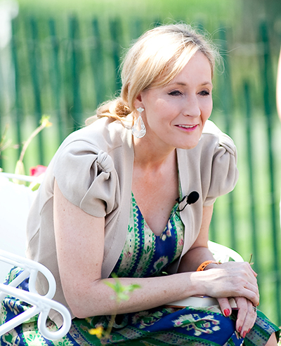
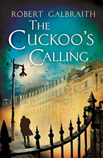
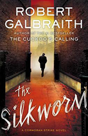
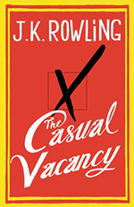
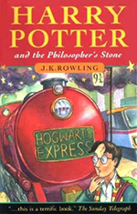

J. K. Rowling
Joanne Rowling, best known as J.K. Rowling, was born on July 31, 1965, in Yate, England. She adopted her pen name, J.K., incorporating her grandmother's name, Kathleen, for the latter initial (Rowling does not have a middle name). As a single mother living in Edinburgh, Scotland, Rowling became an international literary sensation in 1999, when the first three installments of her Harry Potter children's book series took over the top three slots of The New York Times best-seller list after achieving similar success in her native United Kingdom. The phenomenal response to Rowling's books culminated in July 2000, when the fourth volume in the series, Harry Potter and the Goblet of Fire, became the fastest-selling book in history.
Rowling's first book aimed at adults, The Casual Vacancy, was published in September 2012. The novel, a dark comedy about a local election in the small English town of Pagford, received mixed reviews. In 2013, Rowling broke into a new genre: crime fiction. But this new work involved a mystery all of its own. She published the mystery novel Cuckoo Calling that April under the pen name Robert Galbraith. In its first few months of release, the novel had modest sales and received positive reviews. Sales for the work skyrocketed in July when its author's identity was discovered [5].
Rowling has named communist and civil rights activist Jessica Mitford as her "most influential writer" saying, "Jessica Mitford has been my heroine since I was 14 years old, when I overheard my formidable great-aunt discussing how Mitford had run away at the age of 19 to fight with the Reds in the Spanish Civil War", and claims what inspired her about Mitford was that she was "incurably and instinctively rebellious, brave, adventurous, funny and irreverent, she liked nothing better than a good fight, preferably against a pompous and hypocritical target". Rowling has described Jane Austen as her favourite author, calling Emma her favourite book in O, The Oprah Magazine. As a child, Rowling has said her early influences included The Lion, The Witch and The Wardrobe by C.S. Lewis, The Little White Horse by Elizabeth Goudge, and Manxmouse by Paul Gallico [6].
Works
-

The Cuckoo's Calling
After losing his leg to a land mine in Afghanistan, Cormoran Strike is barely scraping by as a private investigator. Strike is down to one client, and creditors are calling. He has also just broken up with his longtime girlfriend and is living in his office. Then John Bristow walks through his door with an amazing story: His sister, thelegendary supermodel Lula Landry, known to her friends as the Cuckoo, famously fell to her death a few months earlier. The police ruled it a suicide, but John refuses to believe that. The case plunges Strike into the world of multimillionaire beauties, rock-star boyfriends, and desperate designers, and it introduces him to every variety of pleasure, enticement, seduction, and delusion known to man. You may think you know detectives, but you've never met one quite like Strike. You may think you know about the wealthy and famous, but you've never seen them under an investigation like this. [1]
Booklist
London PI Cormoran Strike’s final feud with his arguably insane fiancée leaves him camping in his office, wondering how his last two clients will keep him afloat and pay for his new secretary, Robin. When a childhood acquaintance asks him to investigate his supermodel sister’s apparent suicide, Strike finds a distraction from his problems that’s happily attached to a check. Lula Landry was surrounded by rabid paparazzi, a drug-addled social circle, a dysfunctional adopted family, and a shifty, newly found birth mother, making suicidal despair hard to dismiss. But with Robin’s surprisingly adept assistance, Strike dismantles witness statements, applying masterful deductive skills to find evidence of murder. This debut is instantly absorbing, featuring a detective facing crumbling circumstances with resolve instead of clichéd self-destruction and a lovable sidekick with contagious enthusiasm for detection. Galbraith nimbly sidesteps celebrity superficiality, instead exploring the ugly truths in Lula’s six degrees of separation. Strike bears little resemblance to Jackson Brodie, but Kate Atkinson’s fans will appreciate his reliance on deduction and observation along with Galbraith’s skilled storytelling.Christine Tran | Booklist @ Amazon.com
New York Times
Robert Galbraith has written a highly entertaining book... Even better, he has introduced an appealing protagonist in Strike, who's sure to be the star of many sequels to come.... its narrative moves forward with propulsive suspense. More important, Strike and his now-permanent assistant, Robin (playing Nora to his Nick, Salander to his Blomkvist), have become a team - a team whose further adventures the reader cannot help eagerly awaiting.Michiko Kakutani | New York Times @ Amazon.com
Nate Grey
It is rare that you read a mystery these days that keeps you guessing. It seems that most tell you the culprit right away and then plunge you into a battle of wits. This story puts the "who" back into the whodunit. Filled with character who you feel you could meet on the street, if your streets were in London, there is no need to suspend belief at the circumstances that present themselves to our protagonist. And who is the protagonist? A veteran of the Gulf Wars and their protracted aftermath. Wounded in Afghanistan and removed from the ranks to return to London to do in civilian life what the military had honed him to do, investigate. Or, how he believes his mission to be, find justice. Likeable, competent, flawed are words that could easily describe Cormoran Strike; but as with all people he defies pigeon-holing into neat descriptions. He may not be your first choice when you need to find a private detective, but he is your best choice.
So you really should pick up this book and follow Cormoran as he investigates the suicide of a supermodel at the behest of her brother. A brother who does not believe the police's finding of suicide. Could it be that this open and shut case may have a bit more to it? Well there wouldn't be a story to read if it didn't. Moving away from superbly crafted children's stories that captured the imaginations of young and old alike, Galbraith has proven that a master at their craft can deftly move between audiences. What? You have never heard of Galbraith's foray into children's literature? I bet you have. However, you may know this author by their real name, J.K. Rowling. Enjoy this tale of trickery and hidden motives. You will not be disappointed.Nate Grey | Amazon.com
-

The Silkworm
When novelist Owen Quine goes missing, his wife calls in private detective Cormoran Strike. At first, Mrs. Quine just thinks her husband has gone off by himself for a few days--as he has done before--and she wants Strike to find him and bring him home. But as Strike investigates, it becomes clear that there is more to Quine's disappearance than his wife realizes. The novelist has just completed a manuscript featuring poisonous pen-portraits of almost everyone he knows. If the novel were to be published, it would ruin lives--meaning that there are a lot of people who might want him silenced. When Quine is found brutally murdered under bizarre circumstances, it becomes a race against time to understand the motivation of a ruthless killer, a killer unlike any Strike has encountered before... [2]
Richard C. Reynolds
Cormoran Strike is back, asked by the victim’s widow, Leonora, to find out who committed the gruesome murder of the famous writer Owen Quine. Suspects abound in Robert Galbraith’s (aka J. K. Rowling) second mystery novel: other writers, publishers, and literary agents of all stripes. Strike goes to work immediately, aided by his attractive assistant Robin Ellacott. After visiting the scene of the crime, Strike interviews various writers and agents over lunch instead of the suspect’s office or domicile. “They love their bloody lunches, these book people,” Strike remarks. During one such interview, the well-known subject says, “Writers are a savage breed, Mr. Strike. If you want a lifetime of temporary alliances with peers who will glory in your every failure, write novels.”
Slowly but surely Strike unravels the mystery of who killed Quine, rather like peeling an onion one layer at a time. In a mixed-blessing coincidence, the detective at Scotland Yard who is working the same case turns out to be a fellow army mate whose life Strike saved in Afghanistan. While we try to match wits with Strike and come to our own conclusions, we learn more about Strike’s and Robin’s personal lives. Strike is still suffering physically with his prosthesis, necessary because part of his leg was amputated while in Afghanistan. He’s also ailing emotionally because Charlotte, his old flame of sixteen years, has become engaged to a fellow in Britain’s upper class. There’s also an attraction brewing between Strike and Robin but he won’t cross that line because of his strong moral convictions. Besides, Robin is engaged to Matthew, a young man who becomes increasingly jealous of Strike and Robin’s eagerness to engage in detective work with Strike. Galbraith should now be included in the same ranks as other British novelists such as Agatha Christie and P. D James. I’m anxious to read the next one in the series and see how Strike and Robin, acting as a team, solve another complex mystery.Richard C. Reynolds | Amazon.com
Sandra Iler Kirkland
Novelist Owen Quine has gone missing. His wife comes to detective Comoran Strike. She wants Comoran to find him and bring him home. Quine goes away periodically, but always returns and this time he hasn't. They have a daughter with special needs and Quine knows only he can produce the money needed to keep the family afloat. Strike takes the case and expects it to be an easy one. But as he investigates, it becomes more complicated. Quine has written a new novel, one in which he skewers many of the literary circle of England. He has a mistress who is sure he is leaving his wife and child to be with her, an agent who seems to despise him and a publishing house that would be more than glad to drop him. Every individual thinly disguised in the book would be glad to see him disappear for good. When Strike discovers Quine's body and realizes that he has been killed in a parody of the novel, the race is on to discover the murderer.
The reader also learns more about the personal lives of Strike and his assistant, Robin Ellacott. Strike is a former soldier who has been left with an artificial leg and investigative skills from his time in the military. Huge and focused, he is considered without social skills yet has friends in every circle who would do anything for him. Robin, his assistant, is about to get married and starting to wonder if that is the right course for her, or if it would be more fulfilling to become an investigator herself. Together the two work through the lengthy suspect list to discover who killed Quine. This is the second Comoran Strike book and it is equally as delightful as the first. In the worst-kept secret in the literary world, Robert Galbraith is the pseudonym of J.K. Rowling, and she delivers the plotting and characterization that made her famous as an author. The reader finishes the book eager to read the next installment in the series. This book is recommended for mystery readers.Sandra Iler Kirkland | Amazon.com
William Edward Schenck
Robert Galbraith has established himself as an author of equal stature with the best writers of this genre. Cormoran Strike will become as well known as Jack Reacher, Oliver Stone, Inspector Morse and many others plying the trade of nemesis to hapless criminal minds so over matched. Robert Galbraith (J.K. Rowling) writes with an engaging style and effortless prose that develops the plot, characterization and setting with such transparency that makes the task of reading invisible. If you like Agatha Christy, David Baldacci, Lee Child and Colen Dexter, Robert Galbraith will not disappoint you.William Edward Schenck | Amazon.com
-

The Casual Vacancy
When Barry Fairbrother dies in his early forties, the town of Pagford is left in shock. Pagford is, seemingly, an English idyll, with a cobbled market square and an ancient abbey, but what lies behind the pretty façade is a town at war. Rich at war with poor, teenagers at war with their parents, wives at war with their husbands, teachers at war with their pupils...Pagford is not what it first seems. And the empty seat left by Barry on the parish council soon becomes the catalyst for the biggest war the town has yet seen. Who will triumph in an election fraught with passion, duplicity, and unexpected revelations? [3].
Publishers Weekly
On the face of it, Rowling's first adult book is very different from the Harry Potter books that made her rich and famous. It's resolutely unmagical: the closest thing to wizardry is the ability to hack into the amateurish Pagford Parish Council Web site. Instead of a battle for worldwide domination, there's a fight over a suddenly empty seat on that Council, the vacancy of the title. Yet despite the lack of invisibility cloaks and pensieves, Pagford isn't so different from Harry's world. There's a massive divide between the haves and those pesky have-nots—the residents of the Fields, the council flat that some want to push off onto Yarvil, the county council nearby. In tiny Pagford, and at its school, which caters to have and have-nots alike, everyone is connected: teenager Krystal Weedon, the sole functioning member of her working-class family, hooks up with the middle-class son of her guidance counselor; the social worker watching over Krystal's troubled mother dates the law partner of the son of the dead Councilor's fiercest Council rival, who also happens to be the best friend of Councilor Barry Fairbrother; Krystal's great-grandmother's doctor was Fairbrother's closest ally; the daughters of the doctor and the social worker work together, along with the best friend of Krystal's hookup; and so on. When Fairbrother—born in Fields but now a middle-class Pagforder and one of the few people who can deal with the obstreperous Krystal—dies suddenly, the fight gets uglier.
Rowling is relentlessly competent: all these people and their hatreds and hopes are established and mixed together. Secrets are revealed, relationships twist and break, and the book rolls toward its awful, logical climax with aplomb. As in the Harry Potter books, children make mistakes and join together with a common cause, accompanied here by adults, some malicious, some trying yet failing. Minus the magic, though, good and evil are depressingly human, and while the characters are all well drawn and believable, they aren't much fun.Agent: The Blair Partnership | Publishers Weekly @ Amazon.com
Booklist
J. K. Rowling has said that she considered writing The Casual Vacancy under a pseudonym. Had she done so, Rowling probably would have learned what it’s like to be a midlist author—unpublicized, unnoticed, and unhappy. Like many midlist titles, this one is perfectly fine, but in no way outstanding. Set in Pagford, a picturesque West Country village, this very British book has a clever, if arcane, centerpiece: a casual vacancy, an opening on the village council. When Barry Fairbrother drops dead of an aneurysm, his death sets off a chain reaction. A strong supporter of keeping a poor council estate as part of Pagford (he grew up there), Fairbrother is opposed by a smug, controlling businessman (Vernon Dursley, writ small) who wants to rid the village of the “undesirables.” Fairbrother’s demise causes a crisis at the council and in the personal lives of many, including a teenager to whom he gave a helping hand.
As everyone knows, Rowling is very good at creating worlds, and here she effectively shows the stifling (for some) and satisfying (for others) constraints of village life. Somewhat less successful are her characters, who wouldn’t seem out of place in a British soap opera: not surprisingly, it’s her several teen characters, the tortured and the torturers, who jump most from the page. As for her prose, well, that was never Rowling’s strong suit, and it lumbers more than it soars. To give credit where it’s due, one of the world’s richest women wrote her book and is willing to take the critical lumps when she didn’t have to do anything more than stay home and count her money. She must like to write.Ilene Cooper | Booklist @ Amazon.com
Simply Keith
Having read some of the more negative views, I have to say this: Would you have ranked "1984", "The Bluest Eye", "The Grapes of Wrath", or "Great Expectations" so badly? Guess what, some of the best stories aren't fun-filled light reading! Some of the best works are disturbing, even sad. So, if your view of literature is that a book can only be worthwhile if you can breeze through it having a fun adventure, then don't bother with this book. This is something else entirely. That said, "The Casual Vacancy" is a disturbing character study. It is written in third-person omniscient point of view. It does require some effort to handle a story with some 18 or so viewpoint characters, so this book will be at too high a reading level for some. I normally don't like the omniscient POV, but this story had to be told that way and Rowling handles it with expertise.
So, what is this book about? It is about pain and cruelty and why people become cruel. There are no traditional protagonists or antagonists, just people going through life. Rowling explores the various ways that people become cruel, angry, or jaded with each main character showing a different form of cruelty and a different reason for it. And, this book is about the people that get hurt by other people's pain and anger. This isn't an easy book to read, probably the reason so many have reviewed it negatively. But, this is a brilliantly written book, just not for everyone.
This novel is written with a seldom-seen narrative structure. In this structure the story begins with a simple, perhaps commonplace, connection between a group of people (in this case, someone dies, which has some effect on each of these characters). The narrative then explores how each character's life led him or her to be present for that connecting event and then the character moves on past the single event. As this structure is used for a character study, the connecting event may not even be particularly important. Instead, we see a collection of interconnected characters as the main thrust of the novel, rather than a single story unfolding. In this case, we follow how the death at the beginning of the novel affects approximately 18 characters. I highly recommend this book to those who want to read something thought-provoking and actually about the real world. But, if you want some light reading that you don't have to think about, then stay away from "The Casual Vacancy".William Edward Schenck | Amazon.com
-

Harry Potter And The Philosopher's Stone
Harry Potter has no idea how famous he is. That's because he's being raised by his miserable aunt and uncle who are terrified Harry will learn that he's really a wizard, just as his parents were. But everything changes when Harry is summoned to attend an infamous school for wizards, and he begins to discover some clues about his illustrious birthright. From the surprising way he is greeted by a lovable giant, to the unique curriculum and colorful faculty at his unusual school, Harry finds himself drawn deep inside a mystical world he never knew existed and closer to his own noble destiny. [4]
School Library Journal
Harry Potter has spent 11 long years living with his aunt, uncle, and cousin, surely the vilest household in children's literature since the family Roald Dahl created for Matilda (Viking, 1988). But like Matilda, Harry is a very special child; in fact, he is the only surviving member of a powerful magical family. His parents were killed by the evil Voldemort, who then mysteriously vanished, and the boy grew up completely ignorant of his own powers, until he received notification of his acceptance at the Hogwarts School of Witchcraft and Wizardry. Once there, Harry's life changes dramatically. Hogwarts is exactly like a traditional British boarding school, except that the professors are all wizards and witches, ghosts roam the halls, and the surrounding woods are inhabited by unicorns and centaurs. There he makes good friends and terrible enemies.
However, evil is lurking at the very heart of Hogwarts, and Harry and his friends must finally face the malevolent and powerful Voldemort, who is intent on taking over the world. The delight of this book lies in the juxtaposition of the world of Muggles (ordinary humans) with the world of magic. A whole host of unique characters inhabits this world, from the absentminded Head Wizard Dumbledore to the sly and supercilious student Draco Malfoy to the loyal but not too bright Hagrid. Harry himself is the perfect confused and unassuming hero, whom trouble follows like a wizard's familiar. After reading this entrancing fantasy, readers will be convinced that they, too, could take the train to Hogwarts School, if only they could find Platform Nine and Three Quarters at the King's Cross Station.Eva Mitnick | School Library Journal @ Amazon.com
Booklist
Orphaned in infancy, Harry Potter is raised by reluctant parents, Aunt Petunia and Uncle Vernon, an odious couple who would be right at home in a Roald Dahl novel. Things go from awful to hideous for Harry until, with the approach of his eleventh birthday, mysterious letters begin arriving addressed to him! His aunt and uncle manage to intercept these until a giant named Hagrid delivers one in person, and to his astonishment, Harry learns that he is a wizard and has been accepted (without even applying) as a student at Hogworts School of Witchcraft and Wizardry. There's even more startling news: it turns out that his parents were killed by an evil wizard so powerful that everyone is afraid to so much as utter his name, Voldemort.
Somehow, though, Harry survived Voldemort's attempt to kill him, too, though it has left him with a lightning-shaped scar on his forehead and enormous celebrity in the world of magic, because Voldemort vanished following his failure. But is he gone for good? What is hidden on the third floor of Hogworts Castle? And who is the Man with Two Faces? Rowling's first novel, which has won numerous prizes in England, is a brilliantly imagined and beautifully written fantasy that incorporates elements of traditional British school stories without once violating the magical underpinnings of the plot. In fact, Rowling's wonderful ability to put a fantastic spin on sports, student rivalry, and eccentric faculty contributes to the humor, charm, and, well, delight of her utterly captivating story.Michael Cart | Booklist @ Amazon.com
Kirkus
In a rousing first novel, already an award-winner in England, Harry is just a baby when his magical parents are done in by Voldemort, a wizard so dastardly other wizards are scared to mention his name. So Harry is brought up by his mean Uncle Vernon and Aunt Petunia Dursley, and picked on by his horrid cousin Dudley. He knows nothing about his magical birthright until ten years later, when he learns he's to attend Hogwarts School of Witchcraft and Wizardry. Hogwarts is a lot like English boarding school, except that instead of classes in math and grammar, the curriculum features courses in Transfiguration, Herbology, and Defense Against the Dark Arts. Harry becomes the star player of Quidditch, a sort of mid-air ball game.
With the help of his new friends Ron and Hermione, Harry solves a mystery involving a sorcerer's stone that ultimately takes him to the evil Voldemort. This hugely enjoyable fantasy is filled with imaginative details, from oddly flavored jelly beans to dragons' eggs hatched on the hearth. It's slanted toward action-oriented readers, who will find that Briticisms meld with all the other wonders of magic school.Kirkus Associates | Kirkus @ Amazon.com
- [1] https://www.amazon.com/Cuckoos-Calling-Cormoran-Strike-Novel/dp/0316206849
- [2] https://www.amazon.com/Silkworm-Cormoran-Strike-Novel/dp/0316351989
- [3] https://www.amazon.com/Casual-Vacancy-J-K-Rowling/dp/0316228583
- [4] https://www.amazon.com/Harry-Potter-Sorcerers-Stone-Rowling/dp/059035342X
- [5] https://www.biography.com/people/jk-rowling-40998
- [6] https://en.wikipedia.org/wiki/J._K._Rowling